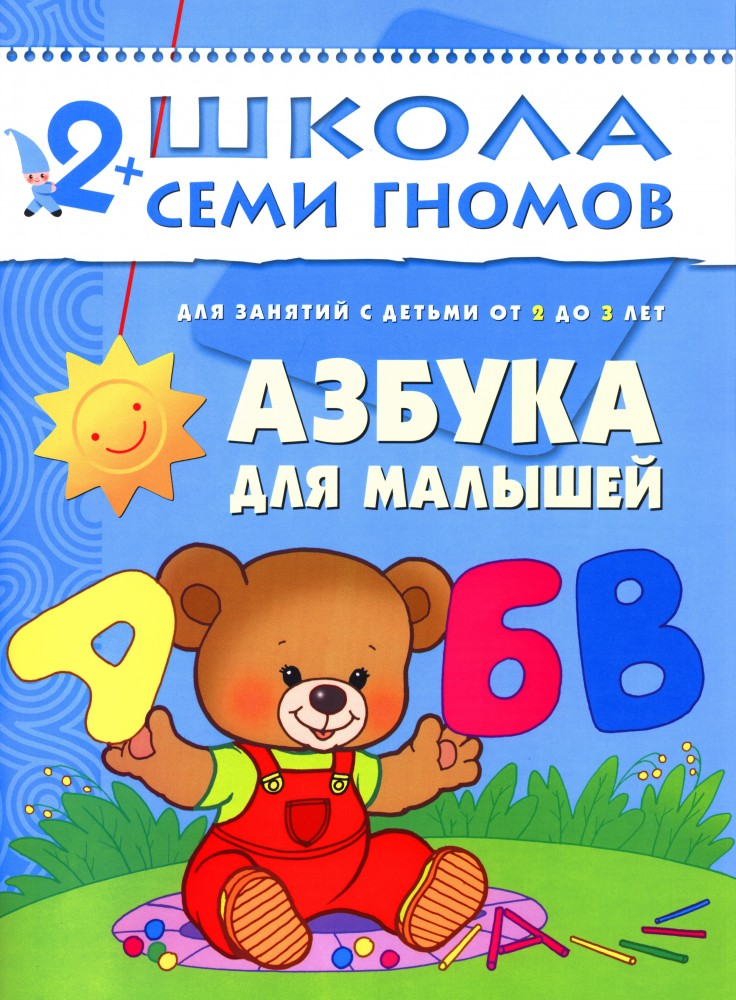
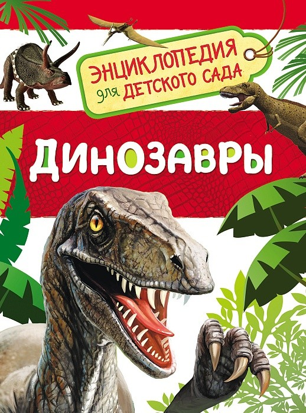
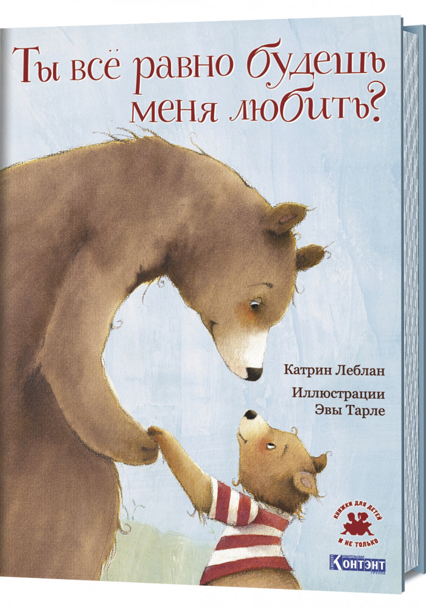

|  |  |  |
|---|---|---|
Краткое описание |
Краткое описание |
Краткое описание |
|
"Школа семи гномов" - это комплексная система занятий
с ребенком от рождения до поступления в школу, по 12
красочных развивающих пособий на каждый год жизни
ребенка-дошкольника. Для каждого возраста свой цвет,
свой гномик, свои книги. Так, например, у всех книжек
для детей в возрасте 2-3 лет голубые обложки. Семь лет
до школы - семь цветов радуги.
Пособия разработаны в соответствии с современными
образовательными стандартами и будут полезны как
родителям, так и специалистам: воспитателям,
методистам, гувернерам. Мягкая обложка, бумага офсетная. |
Эта книга познакомит ребенка с миром динозавров.
Он узнает, как они выглядели, чем отличались друг
от друга и от остальных древних ящеров, что ели,
каким образом спасались от врагов, защищали потомство
и почему вымерли. Серия «Энциклопедия для детского сада» разработана специально для детей дошкольного возраста. Она интересна и полезна как для занятий в детском саду, так и для чтения дома. Эти книги с красочными иллюстрациями написаны простым и понятным языом. А проверить то, как запомнилось прочитанное, можно с помощью интересных заданий по каждой теме. |
Читайте эту книгу своему ребёнку как можно чаще, ведь она волшебная! Медвежонок и его Мама, уже знакомые российским читателям по другим книгам Катрин Леблан, предстают в этой трогательной истории как воплощение абсолютной родительской любви. Нежные акварельные иллюстрации Эвы Тарле сопровождают простой, но в то же время очень важный для любого малыша сюжет — диалог с мамой о том, как далеко простирается родительская любовь. Так о чём же эта книга? О том, что мама будет любить своего ребёнка всегда — что бы ни случилось. |
| Заказать книгу | Заказать книгу | Заказать книгу |
На главную |
||